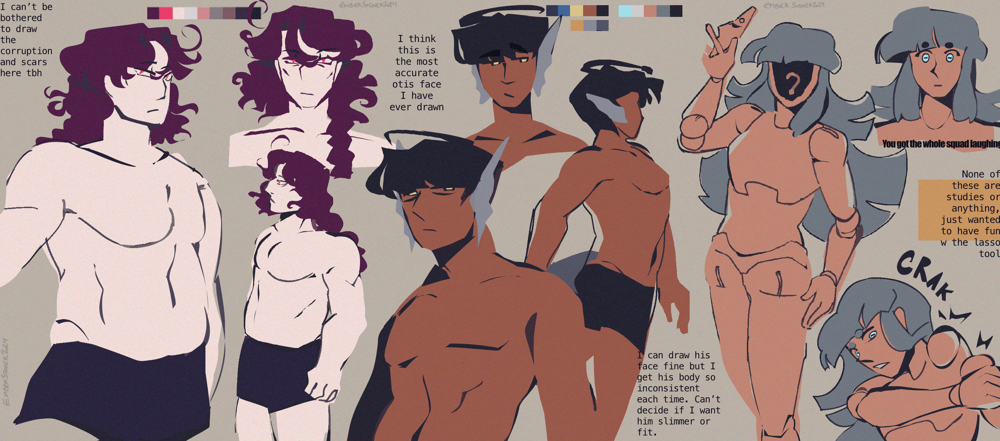

exercises
creation date: oct 18
characters featured: otis, enzo, giomi
did you know that ball-jointed dolls' heads are attached with a hook? that's so quirky.
the title says "exercises" but i really hesitate to say they are real studies... i looked at references occasionally, sure, but i mostly just wanted to have fun with the lasso tool. i started drawing these and the artworks below after realizing that i drew these three ocs off-model all the time. (i think u can tell from various artworks in this months' batch) i figured it'd be helpful to try and draw half-nudes: them at their complete bare-bones. that's why i also excluded their scars for this particular art. need to redo otis's refsheet too cuz it's very outdated to how i currently envision his figure.


don't like this last one, need to redo this one.